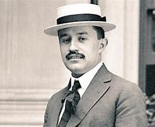
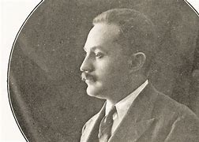
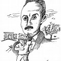

Biografia
José Vasconcelos (1882-1959) fue un hombre multifacético que desempeñó un papel fundamental en la Revolución mexicana, así como en la construcción de las instituciones modernas en ese país. Fue abogado, educador, escritor, político y filósofo.
.jpg) <>
<>
Inicios revolucionarios
Sus comienzos como simpatizante de los ideales revolucionarios se dieron un par de años después de recibirse como licenciado, cuando se opuso al sistema educativo impuesto durante el gobierno de Porfirio Díaz. Participó, junto con otros jóvenes, en la creación del Ateneo de la Juventud Mexicana, donde se generaban ricos debates intelectuales acerca del sistema que regía a su país. Defendían la libertad de pensamiento y de cátedra, promovían las tradiciones culturales mexicanas, dando relevancia al contacto entre los habitantes y sus propias raíces, lo que dio paso al nacionalismo mexicano.
.jpg)
.jpg)
Revolucion
Después del alzamiento promovido por las fuerzas militares de Victoriano Huerta, en el que asesinaron al presidente Madero, José Vasconcelos se exilió a Estados Unidos.Cuando Venustiano Carranza se opuso a Victoriano Huerta, Vasconcelos fue el encargado de hacerse con el apoyo de parte de potencias como Estados Unidos, Inglaterra, Francia y otras naciones europeas y, al regresar a México, fue asignado como director de la Escuela Nacional Preparatoria.
.jpg)
.jpg)
Secretaria de educacion
En 1921, Vasconcelos fue designado como el primer Secretario de Educación Pública en México. En esa posición estuvo encargado de la reforma educativa, que tuvo como rumbo el nacionalismo cultural del país.Algunas de las principales acciones reformistas fueron la popularización de la educación, la creación de infraestructura en áreas rurales, la publicación de obras y la difusión cultural en el país. Este proyecto educativo fue comparado con una evangelización cultural de la nación, puesto que la idea de Vasconcelos era que cada persona que supiera leer y escribir debía asumir un rol alfabetizador.
.jpg)
.jpg)
Candidatura y elecciones
José Vasconcelos participó en las elecciones presidenciales de 1929, con el apoyo del Partido Nacional Antirreleccionista, en las que se midió contra Pascual Ortiz Rubio.El oponente de Vasconcelos estaba respaldado por Plutarco Elías Calles, y los comicios fueron muy polémicos por todas las irregularidades que sucedieron en la campaña y los resultados. Varios de los líderes que apoyaban a Vasconcelos fueron asesinados a manos de algunos diputados y sicarios, aparentemente pagados por Calles y su gente. Incluso se dieron varios atentados contra el propio Vasconcelos.
 